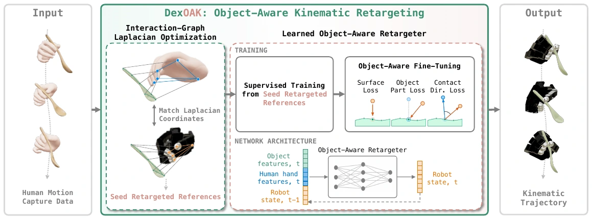

01 / Reference
Preparing live geometry…

Different hands. The same intent. DexOAK turns human hand–object motion into object-aware robot references, then refines them into physical interactions.
Preserve the interaction
across different hand geometries.
Zero-shot retargeting on ARCTIC
Table III · reference generation
Selected learned motions
replayed on real hardware.
Orbit the scene. Follow the trajectories. Compare the kinematic reference with the motion actually achieved after reinforcement learning.
Loading recorded trajectories…
A UR5 and Allegro hand replay selected successful simulation rollouts. Seven tasks, including interactions held out from retargeter training.
4 / 8 successful replays
Table V · Hardware success is conditional on selecting successful simulation rollouts. Cut succeeds in 3% of simulation evaluations; the shown replay is a selected success. The two held-out tasks are reported separately.
The interaction graph carries the human’s intent across embodiments. Learning makes it fast; object-aware refinement makes the reference useful for control.
Human keypoints and object anchors form a shared interaction graph. Optimizing robot joints and wrist pose to match its Laplacian coordinates preserves the local hand–object relationship.

Original Figure 2 from the supplied manuscript.
Explore the paper’s results by dataset and embodiment. Every bar starts at zero; each comparison keeps the reported metric and evaluation setting.
Strict success, SRMT (%) ↑ · OakInk-v2
ADD-AUC (%) ↑ · Allegro
Zero-shot and fine-tuned references transfer from OakInk-v2. These results use the Table III backend, distinct from the end-to-end Table IV comparison above.
Successful DexOAK replays across the five Table V tasks, after selecting successful simulation rollouts.
Preprint metadata · arXiv identifier forthcoming.